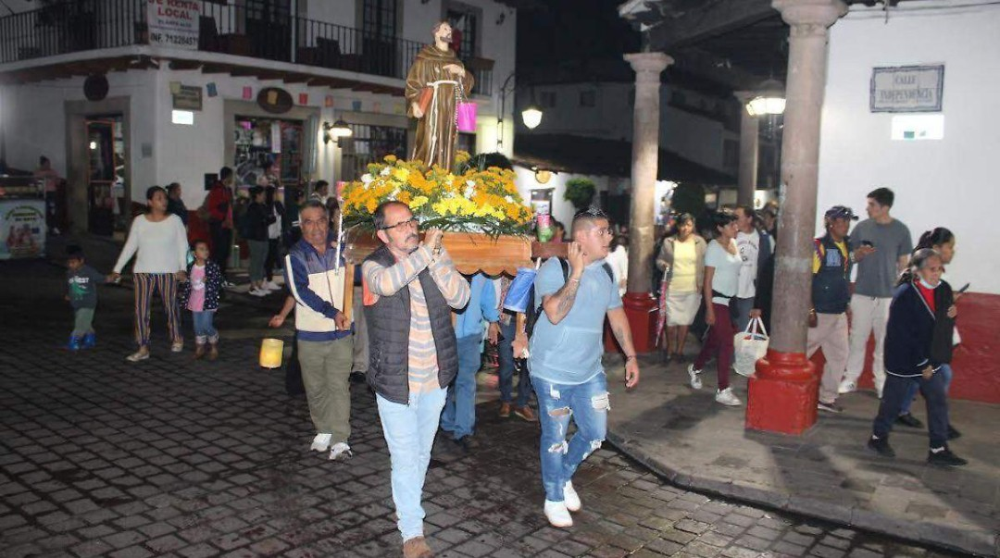
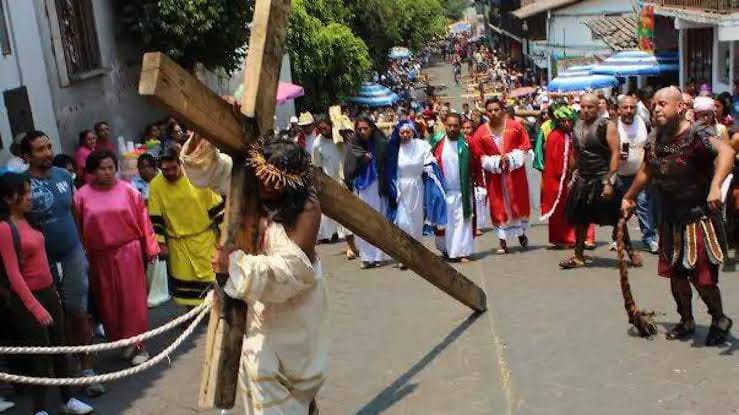
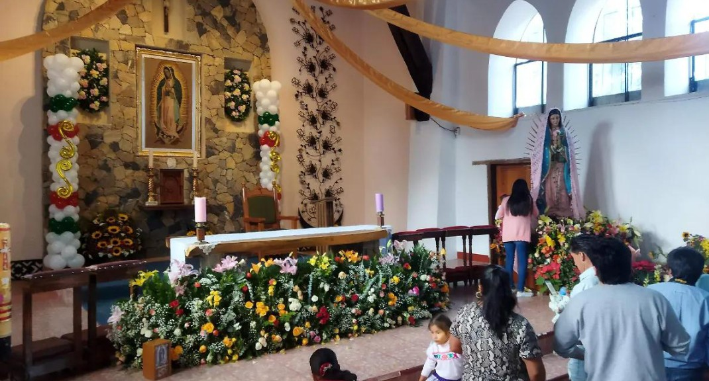

Celebraciones de Valle de Bravo
Las fiestas religiosas forman parte de la identidad cultural de Valle de Bravo. A través de misas, procesiones, peregrinaciones y reuniones comunitarias, sus habitantes conservan tradiciones que se transmiten de generación en generación.

Fiesta de San Francisco de Asís
4 de octubre
Esta celebración se realiza en honor a San Francisco de Asís, patrono de Valle de Bravo. Durante esta fecha, los habitantes participan en misas, procesiones y actividades religiosas para demostrar su devoción.
Es una festividad importante para la comunidad y representa una oportunidad para reunir a las familias y conservar las tradiciones del municipio.

Semana Santa
Fecha variable cada año
La Semana Santa es una de las celebraciones religiosas más importantes. Durante estos días se recuerda la pasión, muerte y resurrección de Jesucristo.
En Valle de Bravo se realizan actividades religiosas como misas, representaciones y procesiones, en las que participan habitantes y visitantes.

Señor de Santa María Ahuacatlán
Tradición religiosa de la comunidad
Esta celebración está relacionada con la devoción al Señor de Santa María Ahuacatlán, conocido como el Cristo Negro, una imagen religiosa muy representativa de Valle de Bravo.
Los fieles acuden a este lugar para expresar su fe mediante oraciones, visitas y actividades religiosas. Esta tradición forma parte de la identidad espiritual del municipio.

Día de la Virgen de Guadalupe
12 de diciembre
Cada 12 de diciembre se celebra a la Virgen de Guadalupe. Es una fecha importante para muchas familias y comunidades que mantienen esta tradición religiosa.
Durante esta celebración se realizan misas, peregrinaciones, cantos y diferentes actividades que expresan la fe y la unión de los participantes.